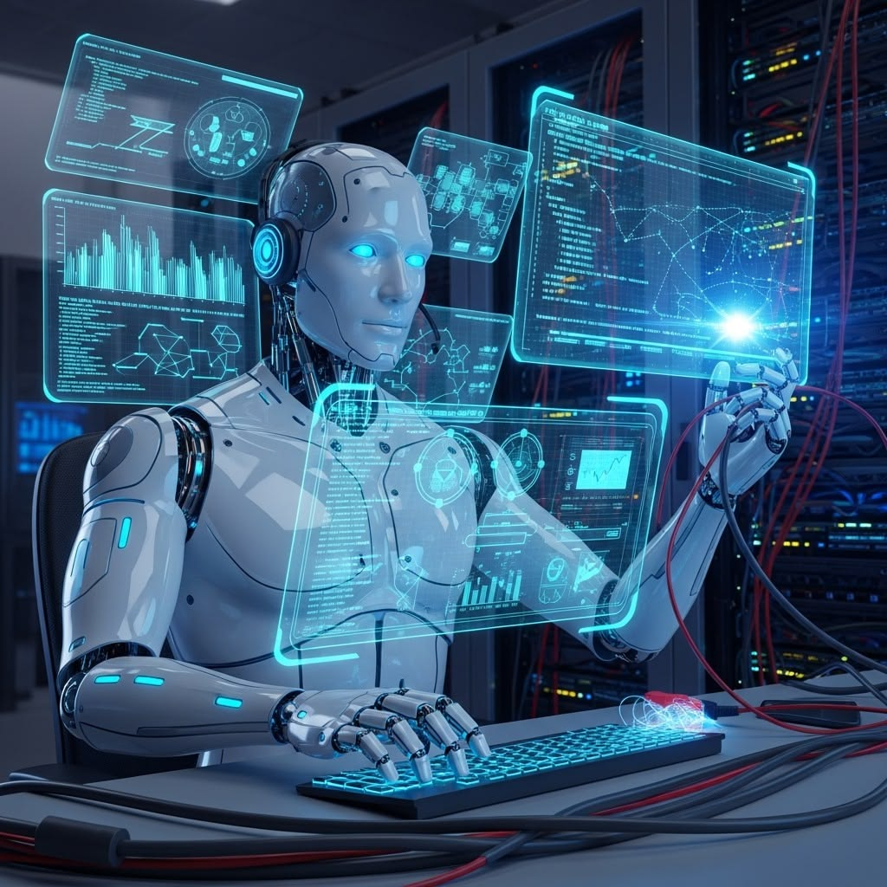

إعداد الطالبة: منه إيهاب حسين رمضان
الكود الجامعي: 2501982
العام الدراسي: 2026 / 2027
المعهد: الدلتا العالي للحاسبات
مهندسة السكشن:منه سلطان
في الفترة الأخيرة حصل تطور كبير في مجال التكنولوجيا، وظهرت برامج وتطبيقات كتير بتساعد الإنسان في حياته اليومية، ومن أهم التطبيقات دي روبوتات الدردشة. بقت روبوتات الدردشة جزء مهم من حياتنا، لأنها بتساعد في الإجابة عن الأسئلة وتقديم المعلومات وإنجاز بعض المهام بسهولة وفي وقت قصير.
ومع تطور الذكاء الاصطناعي، بقت روبوتات الدردشة أكثر قدرة على فهم كلام المستخدم والتفاعل معاه بطريقة قريبة من الحوار الطبيعي بين الأشخاص.
روبوتات الدردشة هي برامج كمبيوتر مصممة علشان تتواصل مع المستخدمين عن طريق الكتابة أو الصوت، وتقدر تجاوب عن الأسئلة وتساعد في تنفيذ مهام مختلفة.
بتظهر أهمية روبوتات الدردشة في إنها بتسهل التواصل بين الإنسان والتكنولوجيا، وبتساعد المستخدم في الوصول للمعلومات، وكمان بتوفر الوقت والمجهود.

| النوع | طريقة العمل | الاستخدام |
|---|---|---|
| التقليدية | ردود جاهزة مسبقاً | مواقع الشركات |
| الذكاء الاصطناعي | فهم الأسئلة والسياق | شرح الدروس والإجابة |
| الصوتية | التفاعل بالصوت | مساعدات الهواتف |
من المتوقع إن روبوتات الدردشة تتطور بشكل أكبر في المستقبل بسبب التقدم المستمر في مجال الذكاء الاصطناعي، وممكن تصبح أكثر قدرة على فهم اللغة والتعامل مع احتياجات المستخدمين.
في النهاية، أقدر أقول إن روبوتات الدردشة من أهم التطبيقات التكنولوجية الحديثة، لأنها بتساعد الإنسان في الحصول على المعلومات وإنجاز المهام بسهولة وسرعة. وعلى الرغم من وجود بعض العيوب والتحديات، فإن استخدامها بطريقة صحيحة ممكن يحقق فوائد كبيرة.